This is an attempt to use tiles as module which when repeated can create repeatable patterns. Since these ‘set of tiles’ are designed to fit into each other and due to their repeatable nature, the size of artwork can vary from a small set to very large installations that can span walls, floors, ceilings, murals, furniture and virtually any surface. I have tried to give a ‘human’ character to these set of tiles by creating ‘imperfect’ hand-built pieces instead of using machine cut forms. ‘Swimmi and Her Fish Gang’ and ‘Chatur Chidiyan’ are inspired by animation features of early 1980s that used to air on Doordarshan. The ‘Hast Mudras’ depict the cultural and spiritual diversity of our country.
 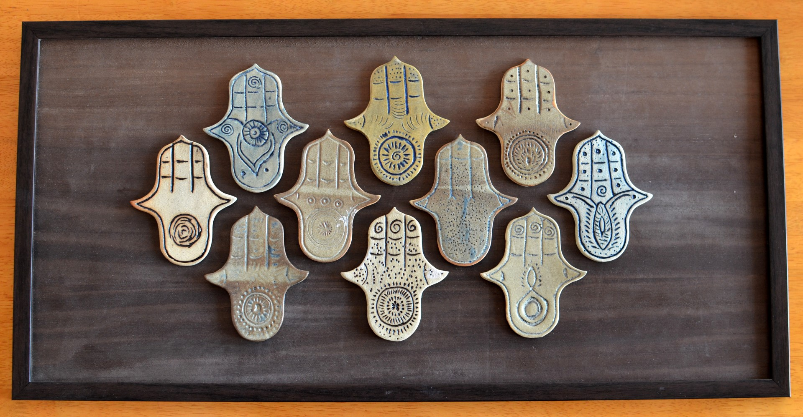
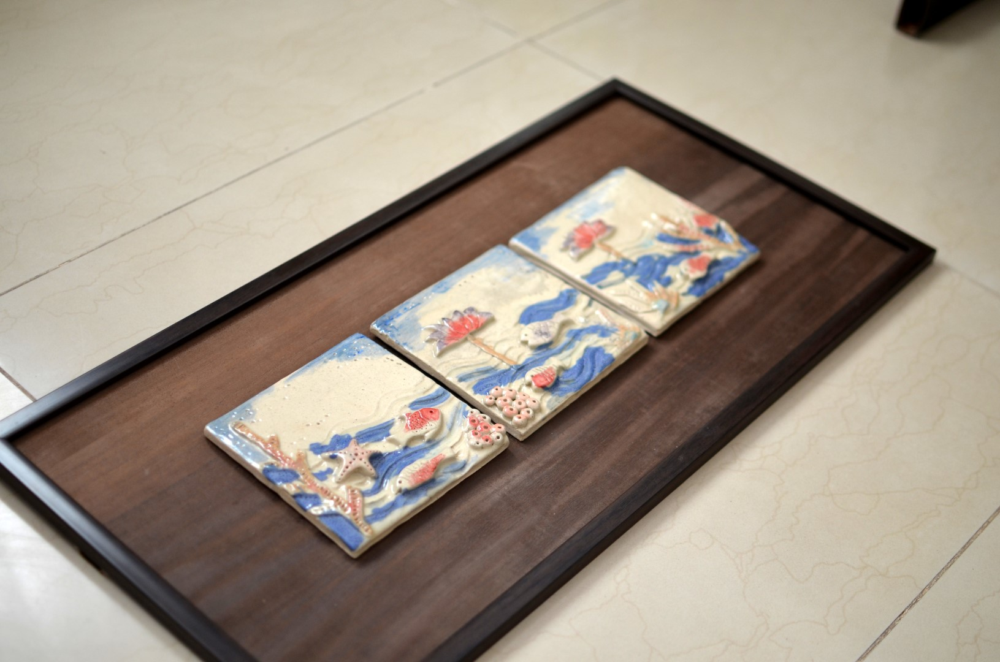
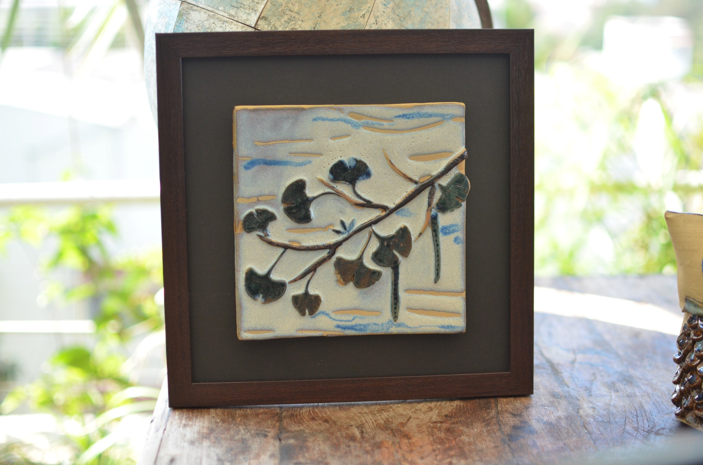
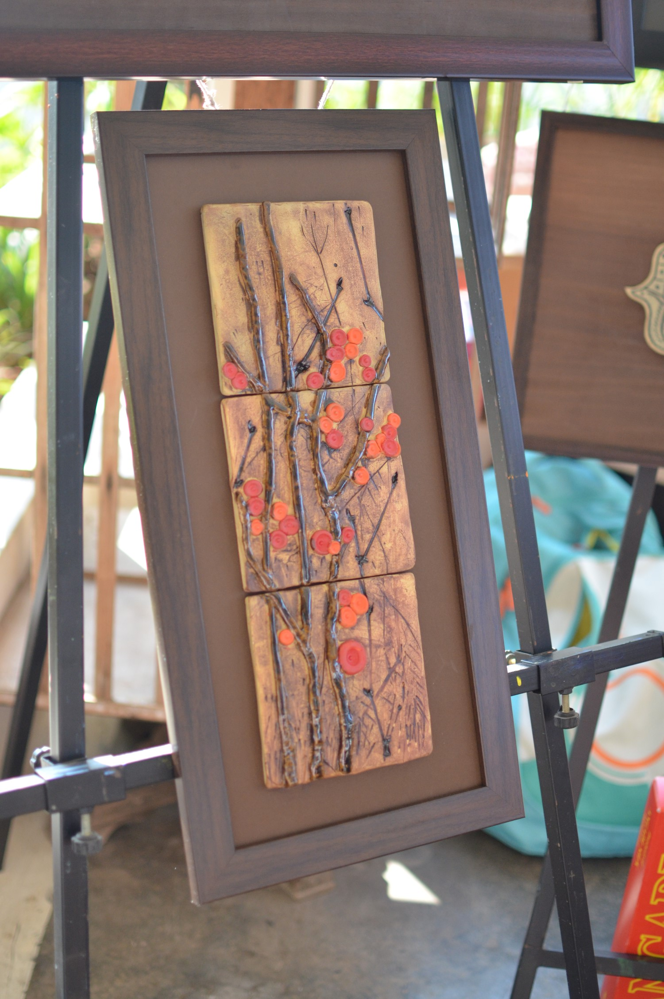
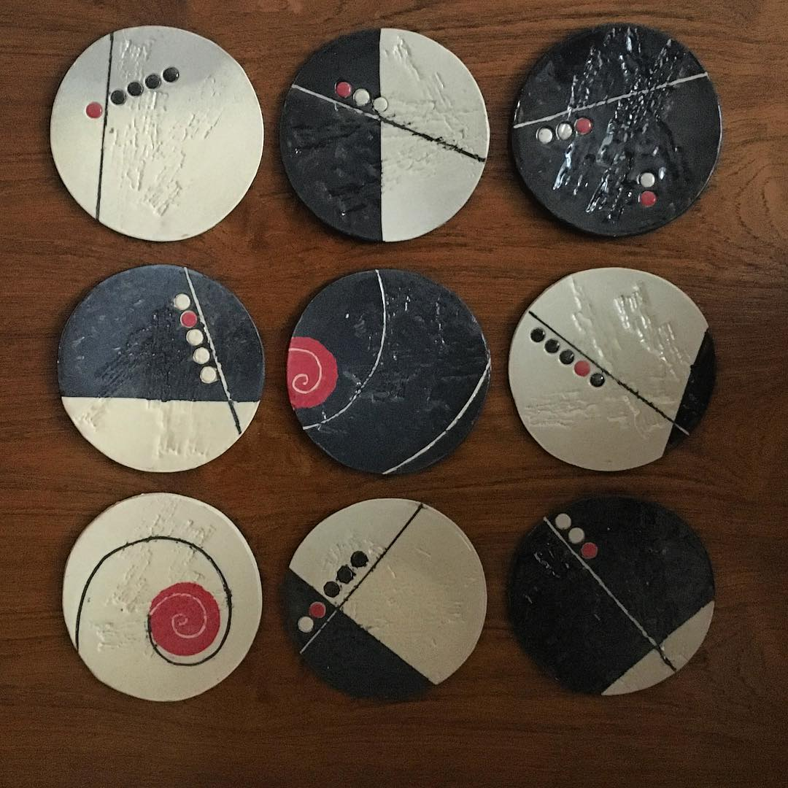
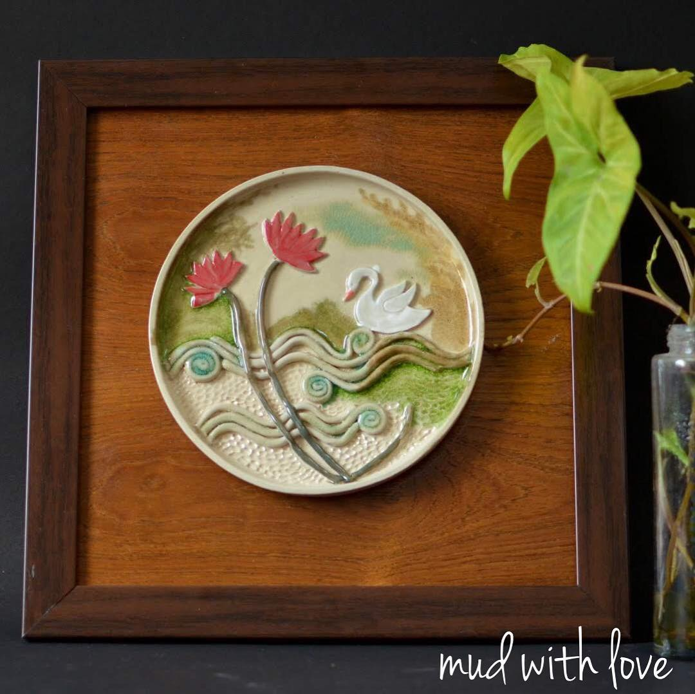
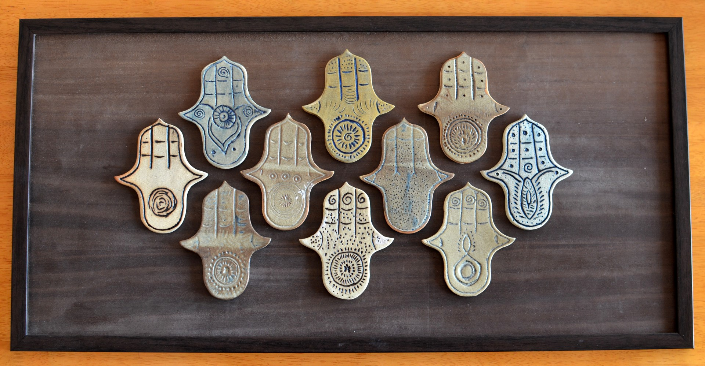
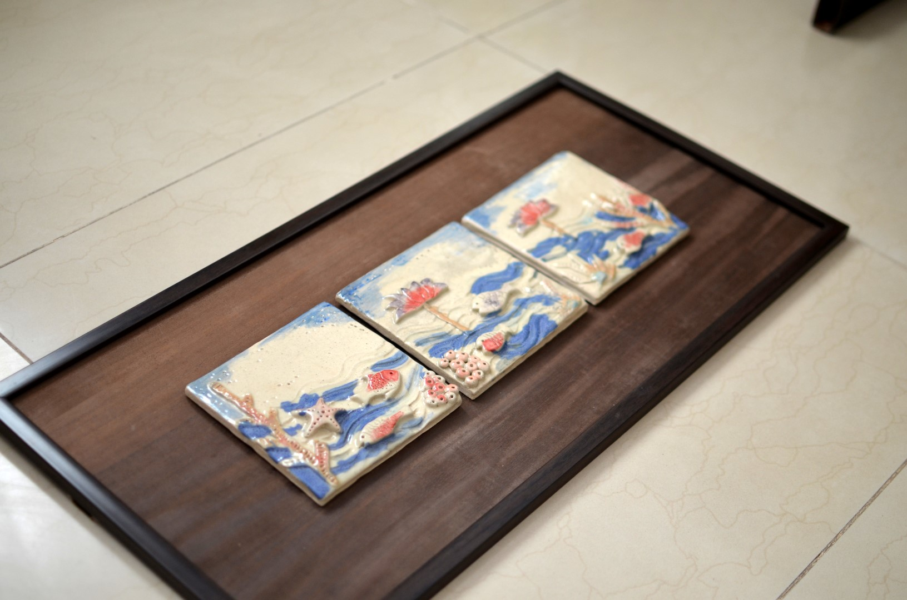
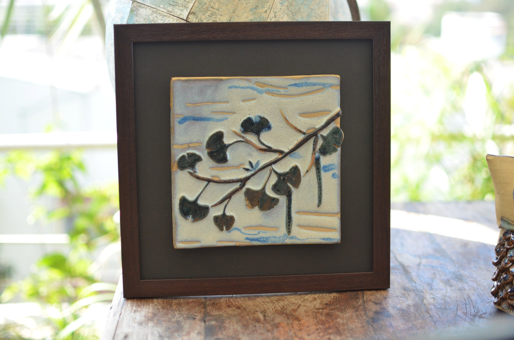
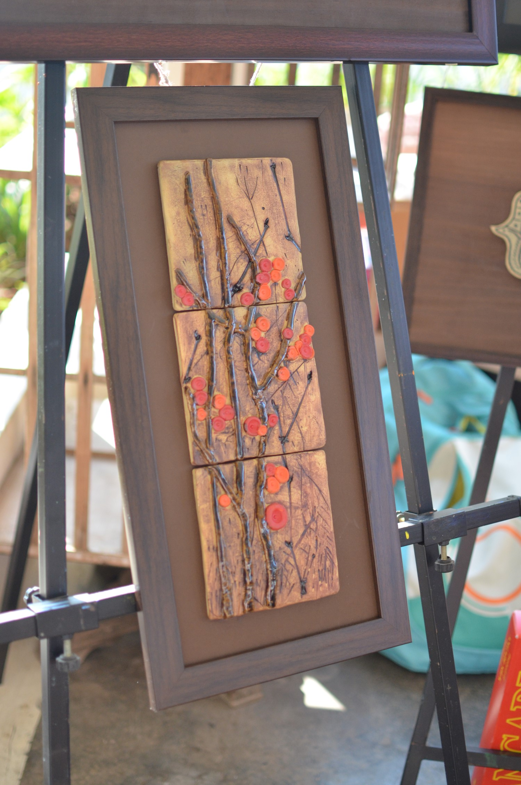
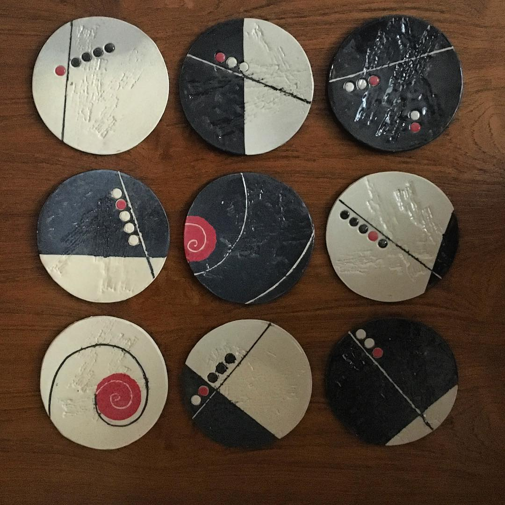
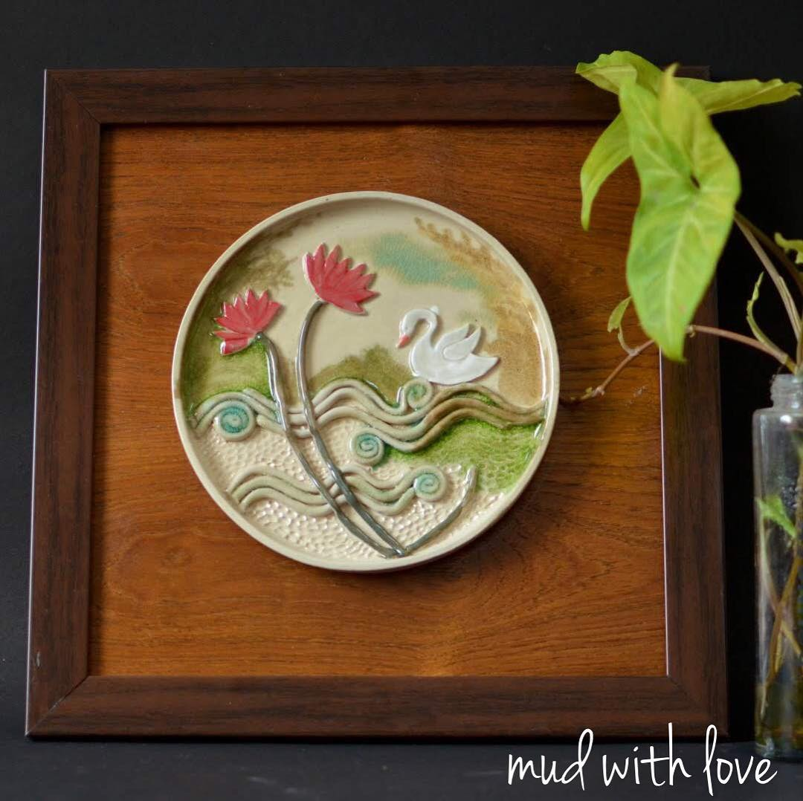